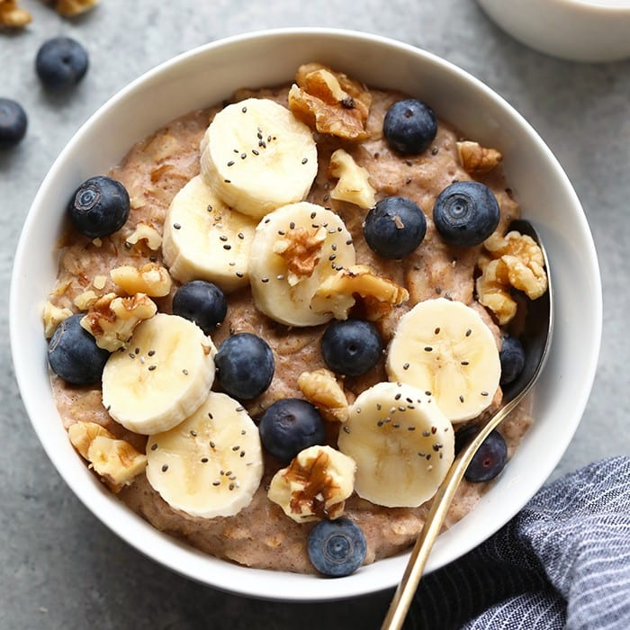

Oatmeal

Banana Nut: This is another one of the classic oatmeal flavors that comes in a packet, so I love recreating it with actual fresh bananas (not the taste of bananas). I usually slice half a banana and add walnuts, ground flaxseeds and cinnamon.
Ingredients
- Oats...duh
- Banana
- Walnuts
- Brown Sugar
- Almond Milk
- Cinnamon
Steps
- Cook the oats either on the stovetop or in the microwave, whichever you prefer. It is recommended that you use milk instead of water for better flavor and texture!
- Once the oats are cooked to your preference, stir in a tablespoon or two of brown sugar (or peanut butter or both) and transfer to a bowl.
- Peel and slice a banana. Layer the slices on top of your oatmeal.
- Add crushed walnut pieces overtop. Consider adding frozen blueberries as well, they will thaw in the warm oatmeal.
- Sprinkle with a healthy does of cinnamon and enjoy!